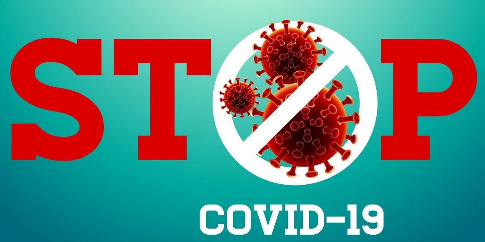
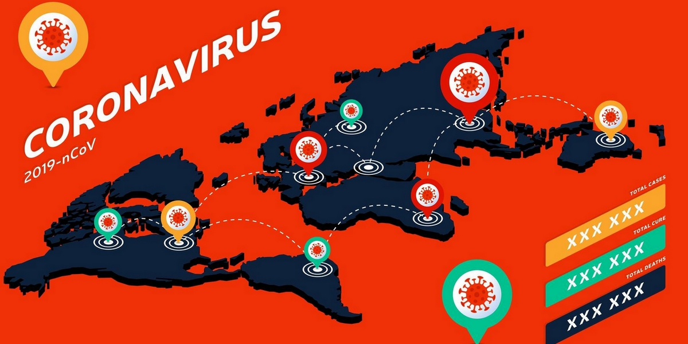

Connaître les symptômes covid 19
Connaître les symptômes covid 19
Symptômes les plus fréquents :
- fièvre
- toux sèche
- fatigue
Symptômes moins fréquents :
- courbatures
- maux de gorge
- diarrhée
- conjonctivite
- maux de tête
- éruption cutanée, ou décoloration des doigts ou des orteils
Symptômes graves :
- difficultés à respirer ou essoufflement.
- sensation d’oppression ou douleur au niveau de la poitrine.
- perte d’élocution ou de motricité.
Pour accéder à le service statistique coronavirus
Cliquez sur { Connexion Médecin }

Sources d’information du système de l’ONU
La maladie à coronavirus 2019 (COVID-19) est un important sujet de conversation et il est essentiel de partager des informations sûres. Pour vérifier les faits, consultez les sources fiables d’information ; outre le site Web de l'Organisation mondiale de la Santé (OMS), qui conseille les pays et les individus sur les mesures à prendre pour protéger la santé et empêcher la propagation de cette flambée, vous pouvez consulter les sites des fonds, agences et programmes des Nations Unies fournissent de l'aide et de l'expertise dans leur domaine d'activités.
Sources : ONU